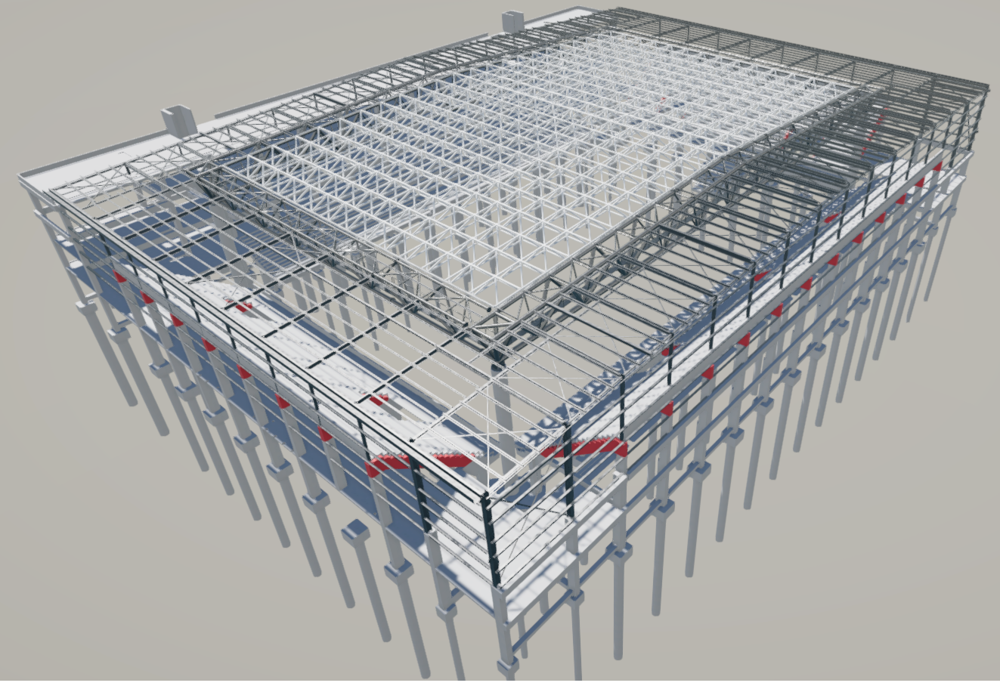
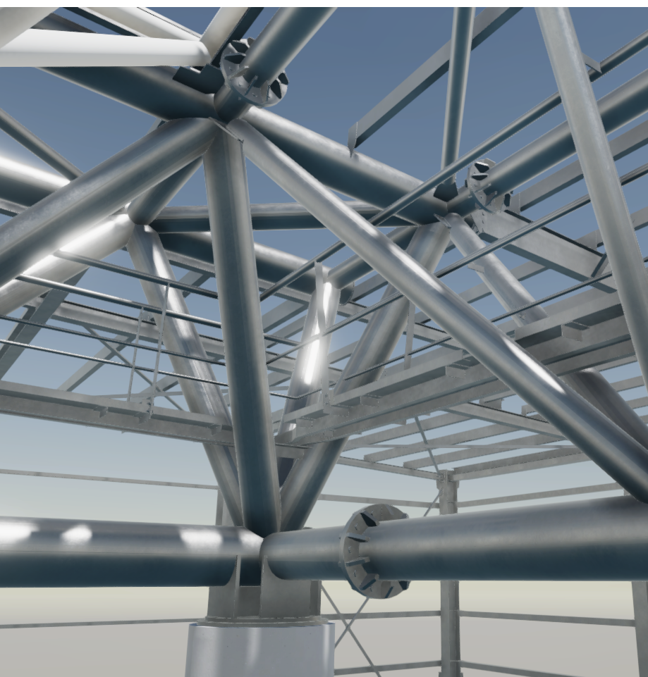
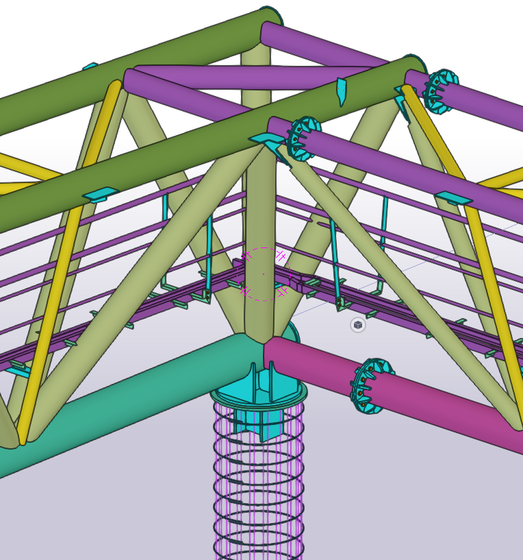
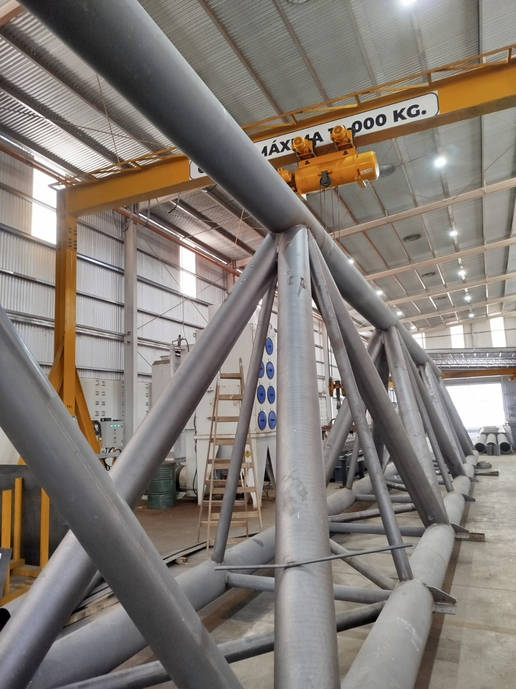
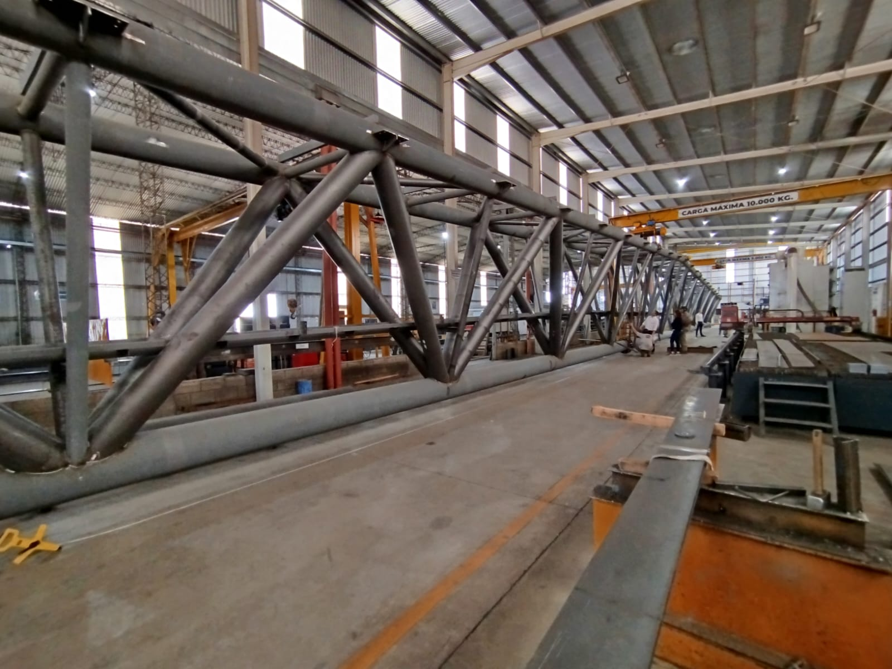

Categoría (ej: Nave Industrial)
Microestadio ODESUR
Microestadio con capacidad para 5000 personas.
Peso100 tn
Superficie3600 m²

El modelo se procesa en tu navegador a partir del archivo modelo.ifc — no requiere instalar software BIM.
El proyecto
Del modelo a la documentación de obra.
Una frase corta que resuma la obra.
El modelo BIM se utilizó como base para desarrollar la documentación de fabricación y montaje de la estructura.
El desafío
Contá acá algún desafío particular de la obra (opcional — si no aplica, borrá este bloque entero).
Tipo de estructuraReticulado espacial
Peso100 tn
Dimensiones50 m × 72 m
Superficie3600 m²
PerfileríaPerfiles armados y Caño estructural
NormativaCIRSOC 301




